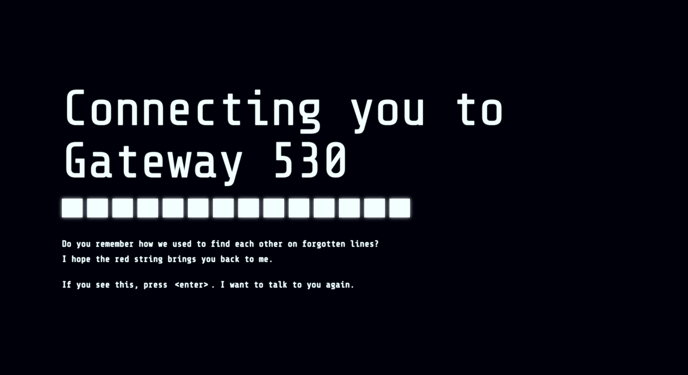

Gateway 530 is a browser-based performance that stages a fleeting encounter between two anonymous presences connected through a transient network channel. Refusing identification, they communicate only through language, forming a fragile intimacy shaped by pauses, delays, silences, and incompleteness. Treating computation as a poetic structure rather than a functional system, the work uses timed delivery, fragmented visibility, and unstable transmission to create gaps that generate connection rather than obstruct it. Through the browser as a liminal and ephemeral space, Untitled reflects on the illusion of proximity in networked environments, where intimacy emerges not through full understanding, but through uncertainty, distance, and temporary openness. The same structures that bring the two presences together also ensure their eventual separation, leaving behind only the trace of a brief and uncertain connection.
Visit the work here